Let's make an animated image.
First, you'll need some images:
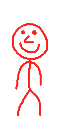, 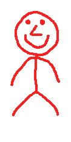, , 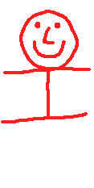 and
You can also download them as a zip here
Load the images and put them in a table.
function love.load()
frames = {}
table.insert(frames, love.graphics.newImage("jump1.png"))
table.insert(frames, love.graphics.newImage("jump2.png"))
table.insert(frames, love.graphics.newImage("jump3.png"))
table.insert(frames, love.graphics.newImage("jump4.png"))
table.insert(frames, love.graphics.newImage("jump5.png"))
endHold on, we can do this much more efficient.
function love.load()
frames = {}
for i=1,5 do
table.insert(frames, love.graphics.newImage("jump" .. i .. ".png"))
end
endThat's better! Now we need to create an animation. How will we do that?
A for-loop?
Nope. A for-loop would let us draw all the frames at the same time, but we want to draw a different frame every second. We need a variable that increases by 1 every second. Well that's easy!
function love.load()
frames = {}
for i=1,5 do
table.insert(frames, love.graphics.newImage("jump" .. i .. ".png"))
end
--I use a long name to avoid confusion with the variable named frames
currentFrame = 1
end
function love.update(dt)
currentFrame = currentFrame + dt
endNow we have the variable currentFrame which increases by 1 every second, let's use this variable to draw the frames.
function love.draw()
love.graphics.draw(frames[currentFrame])
endIf you run the game you'll get an error: bad argument #1 to 'draw' (Drawable expected, got nil)
This is because our variable currentFrame has decimals. After the first update currentFrame is something like 1.016, and while our table has something on position 1 and 2, there is nothing on position 1.016.
To solve this we round the number down with math.floor. So 1.016 will become 1.
function love.draw()
love.graphics.draw(frames[math.floor(currentFrame)])
endRun the game and you'll see that our animation works, but you'll eventually get an error. This is because currentFrame became higher than (or equal to) 6. And we only have 5 frames. To solve this, we reset currentFrame if it gets higher than (or equal to) 6. And while we're at it, let's speed up our animation.
function love.update(dt)
currentFrame = currentFrame + 10 * dt
if currentFrame >= 6 then
currentFrame = 1
end
endLook at him go!
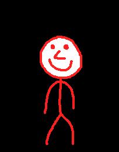
So this works, but it's not very efficient. With large animations we're going to need a lot of images. What if we put all the frames into 1 image, and then draw part of the image. We can do this with quads.
First, download this image:
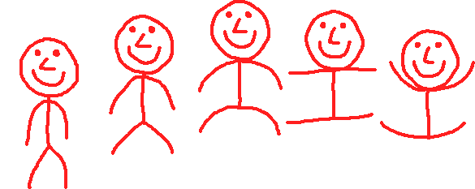
We'll remake the function love.load (you can keep love.update and love.draw the way it is).
function love.load()
image = love.graphics.newImage("jump.png")
endImagine quads like a rectangle that we cut out of our image. We tell the game "We want this part of the image". We're going to make a quad of the first frame. You can make a quad with love.graphics.newQuad(wiki).
The first arguments are the x and y position of our quad. Well since we want the first frame we take the upper-left corner of our image, so 0,0.
function love.load()
image = love.graphics.newImage("jump.png")
frames = {}
table.insert(frames, love.graphics.newQuad(0, 0))
endAgain, quads are like cutting a piece of paper. Where we will eventually draw our image is not relevant to the quad.
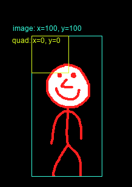
Next 2 arguments are the width and height of our quad. The width of a frame in our image is 117 and the height is 233. The last 2 arguments are the width and height of the full image. We can get these with image:getWidth() and image:getHeight().
function love.load()
image = love.graphics.newImage("jump.png")
frames = {}
local frame_width = 117
local frame_height = 233
table.insert(frames, love.graphics.newQuad(0, 0, frame_width, frame_height, image:getWidth(), image:getHeight()))
endNow let's test our quad by drawing it. You draw a quad by passing it as second argument in love.graphics.draw.
function love.draw()
love.graphics.draw(image, frames[1], 100, 100)
endAs you can see it's drawing our first frame. Great, now let's make the second quad.
To draw the second frame all we need to do is move the rectangle to the right. Since each frame has a width of 117, all we need to do is move our x to the right with 117.
function love.load()
image = love.graphics.newImage("jump.png")
frames = {}
local frame_width = 117
local frame_height = 233
table.insert(frames, love.graphics.newQuad(0, 0, frame_width, frame_height, image:getWidth(), image:getHeight()))
table.insert(frames, love.graphics.newQuad(frame_width, 0, frame_width, frame_height, image:getWidth(), image:getHeight()))
endAnd we can do the same for the 3rd quad.
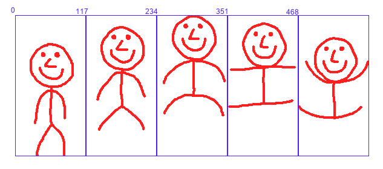
Wait, are we repeating the same action? Don't we have something for that? For-loops! Also, we can prevent calling :getWidth and :getHeight multiple times by storing the values in a variable.
function love.load()
image = love.graphics.newImage("jump.png")
local width = image:getWidth()
local height = image:getHeight()
frames = {}
local frame_width = 117
local frame_height = 233
for i=0,4 do
table.insert(frames, love.graphics.newQuad(i * frame_width, 0, frame_width, frame_height, width, height))
end
--Don't forget the currentFrame variable!
currentFrame = 1
endNotice how we start our for-loop on 0 and end it on 4, instead of 1 to 5. This is because our first quad is on position 0, and 0 * 177 equals 0.
Now all that is left to do is use currentFrame for the quad we want to draw.
function love.draw()
love.graphics.draw(image, frames[math.floor(currentFrame)], 100, 100)
endSo we can now turn a row of frames into an animation, but what if we have multiple rows?
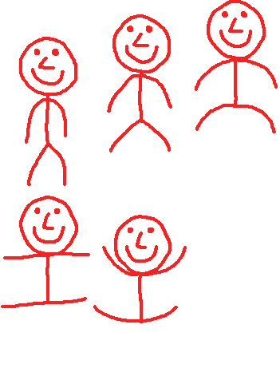
Easy, we just have to repeat the same thing with a different y value.
function love.load()
image = love.graphics.newImage("jump2.png")
local width = image:getWidth()
local height = image:getHeight()
frames = {}
local frame_width = 117
local frame_height = 233
for i=0,3 do
table.insert(frames, love.graphics.newQuad(i * frame_width, 0, frame_width, frame_height, width, height))
end
for i=0,2 do
table.insert(frames, love.graphics.newQuad(i * frame_width, frame_height, frame_width, frame_height, width, height))
end
currentFrame = 1
endBut wait, there it is again: Repetition! And what do we do when we see repetition? We use a for-loop.
So what, like, a for-loop inside a for-loop?
Exactly! We're going to have to make a few changes though.
function love.load()
image = love.graphics.newImage("jump2.png")
local width = image:getWidth()
local height = image:getHeight()
frames = {}
local frame_width = 117
local frame_height = 233
for i=0,1 do
--I changed i to j in the inner for-loop
for j=0,2 do
--Meaning you also need to change it here
table.insert(frames, love.graphics.newQuad(j * frame_width, i * frame_height, frame_width, frame_height, width, height))
end
end
currentFrame = 1
endSo in the first iteration of the outer for-loop, i equals 0, and j equals 0, then 1, then 2 and finally 3. In the second iteration, i equals 1, and j again equals 0, then 1, then 2 and finally 3.
You might notice that we have an extra, empty quad. This isn't really a big deal, but we can do something like this to prevent it
maxFrames = 5
for i=0,1 do
for j=0,2 do
table.insert(frames, love.graphics.newQuad(j * frame_width, i * frame_height, frame_width, frame_height, width, height))
if #frames == maxFrames then
break
end
end
print("I don't break!")
endWith break we can end a for-loop. This will prevent it from adding that last quad.
Note how "I don't break" gets printed. This is because break only breaks the loop you use it in, the outer loop still continues. It could be fixed by adding the same if-statement in our outer-loop, but in our case it doesn't matter since the loop at that point is already on its last iteration.
When rotating and/or scaling an image while using quads, an effect can appear called bleeding. What happens is that part of the image outside of the quad gets drawn.
So if this was our spritesheet:
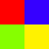
Our first frame could end up like this:
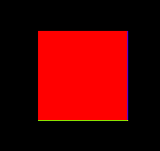
It's kind of technical why this happens, but the fact is that it does happen. Luckily, we can solve this issue by adding a 1 pixel border around our frame. Either of the same color as the actualy border, or with transparency.
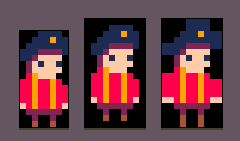
And then we don't include that border inside the quad.
I added a border to our jumping character. Instead of transparent I made it purple so that we can see if we're not accidentally drawing part of the border.
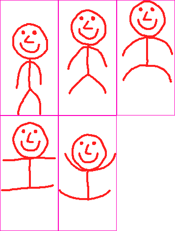
Let's do this step by step.
First, we do not want the first pixel to be drawn, so our quad starts at 1 (instead of 0).
newQuad(1, 1, frame_width, frame_height, width, height)Okay so this works for the first frame, but what part of the next frame do we want to draw? Simply add the frame width/height?
newQuad(1 + j * frame_width, 1 + i * frame_height, frame_width, frame_height, width, height)Almost. We're missing something.
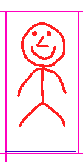
The blue line is our quad. As you can see, the quad is 2 pixels to the left of where it's supposed to be. So let's add 2 to how much we move each iteration.
newQuad(1 + j * (frame_width + 2), 1 + i * (frame_height + 2), frame_width, frame_height, width, height)And now our quads are in the correct position. Here's an image visualizing how we position the quad.
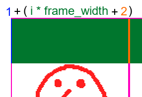
With quads we can draw part of an image. we can use this to turn a spritesheet into an animation. In case of multiple rows we can use a for-loop inside a for-loop to cover the whole sheet. We can use break to end a loop. We add a 1 pixel border to our sprites to prevent bleeding.